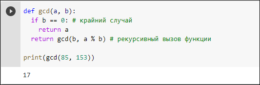

Понятие алгоритма
Понятие алгоритмаРекурсивные алгоритмы
Для начала, разберёмся, что мы понимаем под понятием «рекурсия» в программировании. Рекурсия в программировании тесно связана с понятием рекурсивной функции. Собственно, рекурсия – это вызов функцией самой себя. Это может происходить непосредственно, например, функция func вызывает функцию func, или же опосредованно, например, функция func1 вызывает функцию func2, которая в свою очередь вызывает функцию func1. Количество таких вложенных вызовов называется глубиной рекурсии. Основной принцип составления рекурсивной функции — это сведение задачи к аналогичной, но более простой с точки зрения вычислений.
Согласно мнению Адитьи Бхаргавы, для написания любой рекурсивной функции необходимо рассмотреть два следующих элемента: шаг рекурсии (рекурсивное соотношение) и крайний случай (база рекурсии). Шаг рекурсии представляет из себя процесс упрощения вычисления функции, то есть непосредственное сведение задачи к меньшей подзадаче. Крайний случай – это некий набор заданных значений, элементарных исходов, результат работы функции для которых тривиален. Крайний случай так же является условием выхода из рекурсивной функции.
Очень важным замечанием является ограниченность глубины рекурсии. Сама по себе глубина рекурсии в силу логики ограничена быть не может. Естественные ограничения накладывает язык программирования в виду ограниченности ресурсов компьютера. Дело в том, что в языке программирования Python существует стек вызовов, в котором хранится каждая исполняемая нами функция. В момент рекурсивного вызова функции текущая функция переходит как бы в режим ожидания и на стек ложится новая функция. Таким образом, при чрезмерно большой глубине рекурсии или если крайний случай не реализован вовсе, то есть рекурсивный вызов будет бесконечным, происходит переполнение стека вызовов, и программа завершает свою работу с ошибкой. Стандартный максимальный размер стека вызовов в Python равен 1000. В этом всегда можно убедиться, если импортировать модуль sys и вызвать метод getrecursionlimit. Важным замечанием является то, что в Python предусмотрена возможность увеличения максимального размера стека вызовов, однако делать это крайне не рекомендуется, особенно, неопытным пользователям. Для исключения ошибок переполнения стека рекомендуется начинать разработку рекурсивных функций с рассмотрения крайнего случая. Именно такой подход будет реализован ниже при рассмотрении конкретных примеров.
Задачи для объяснения
В качестве первой задачи для объяснения темы «Рекурсия» предлагается написать функцию нахождения факториала. Как нам известно, факториал некоторого числа n равен произведению n чисел от 1 до n. Отлично, для начала определимся с крайним случаем. В данной функции крайний случай достаточно прост – мы знаем, что факториал 0 равен 1 и факториал 1 также равен 1. Это будет нашим крайним случаем или базой рекурсии. Теперь, давайте внимательно посмотрим на само определение факториала и подумаем, как можно свести нашу задачу к подзадаче. Нам опять очень повезло, ведь прямо из определения факториала следует его рекурсивное представление – факториал числа n будет равняться числу n, умноженному на факториал числа n-1. Теперь у нас есть всё для написания нашей рекурсивной функции. На рисунке представлена реализация рекурсивной функции нахождения факториала числа n на языке программирования Python с примером вычисления факториала числа 7:
Вторая задача, которая предлагается в качестве задачи для объяснения материала, это задача вычисления n-го числа Фибоначчи с помощью рекурсии.
Согласно определению, каждое следующее число Фибоначчи равно сумме двух предыдущих. При этом нулевое число Фибоначчи равно 0, а первое число Фибоначчи равно 1.
Сразу из определения можно выделить крайний случай нашей рекурсивной функции – это значение функции от 0 равное 0 и значение функции от 1 равное 1.
В случае с числами Фибоначчи, рекурсия заложена в само их определение, так как по определению, чтобы посчитать n-ое число Фибоначчи нам нужно решить две аналогичные, но более простые задачи, а именно, посчитать n-1-ое число Фибоначчи и n-2-ое число Фибоначчи.
Итак, мы нашли базу рекурсии и составили рекурсивное отношение, а значит, можем приступать к написанию нашей функции. Пример реализации функции, которая вычисляет n-е число Фибоначчи на языке программирования Python представлен на рисунке:
В случае с вычислением чисел Фибоначчи важно заметить, что рекурсивная реализация таких вычислений имеет плохую асимптотику, поэтому в некоторых случаях рациональнее реализовать итеративный поиск с помощью цикла.
Очень наглядным и красивым представлением рекурсии является рисование фракталов. Фракталы – это геометрические фигуры, которые обладают свойством самоподобия. В качестве третьей задачи для объяснения темы будет рассмотрена задача рисования кривой Кохи. Для рисования на языке программирования Python будет использоваться стандартная библиотека turtle. Давайте сначала посмотрим, как же выглядит кривая Коха. Для наглядности на рисунке представлены примеры кривой Коха разных порядков:
Теперь разберёмся, как нам её построить. По определению, кривая Коха строится следующим образом: берём прямой отрезок, делим его на 3 равные части, а затем вторую часть данного отрезка заменяемся на равносторонний треугольник, без этой части. В результате получаем ломанную, состоящую из четырёх звеньев. Для продолжения построения проделываем аналогичную операцию с каждым из этих звеньев. Теперь подумаем, как свести этот способ построения к рекурсии. Начнём с крайнего случая. При проектировании рекурсивной функции, надо стараться сделать так, чтобы крайний случай был как можно более тривиальным. В нашем случае самым простым будет нарисовать просто прямую линию. Отлично, обозначим кривую Коха нулевого порядка как обычный отрезок. Это и будет наш крайний случай. В случае с рекурсивным отношением в построении прямой Коха всё просто. Мы будет рисовать кривую Коха первого порядка, только вместо отрезков, на каждом этапе в свою очередь будем так же рисовать кривую Коха. На рисунке показано, как это выглядит на языке программирования Python:
Результат работы данной функции был продемонстрирован ранее.
Таким образом, были рассмотрены типовые алгоритмы и примеры их реализации на языке программирования Python, которые необходимо разобрать на уроке информатики обучающимся старших классов, для лучшего усвоения темы «Рекурсивные алгоритмы».
Задачи для самостоятельного решения
Первой задачей, которая предлагается школьникам для закрепления темы «Рекурсивные алгоритмы», будет задача о Ханойский башнях. Условие задачи выглядит следующим образом: даны три стержня, на первый стержень нанизаны n дисков, каждый из которых отличается от всех других размером. Задача заключается в том, чтобы переложить эти n дисков на второй стержень за наименьшее число переносов, причём за один перенос разрешает брать только один диск, а также нельзя класть больший диск на меньший.
Ход рассуждений: для начала, нам надо разобраться с крайним случаем. Мы помним, что крайний случай должен быть как можно более тривиальным, а значит в данной задаче в качестве крайнего случая лучше всего подойдёт перекладывание 1 диска на второй стержень. Далее, для удобства, уйдём от привычных названий стержней по номеру и переформулируем задачу так: нам надо переложить n дисков c k-ого стержня на i-ый, а последний стержень назовём tmp. Теперь, свяжем наши названия стержней и их номера. Так как изначально у нас был первый, второй и третий стержень, то мы можем вывести следующую формулу: k + i + tmp = 6. Таким образом, мы всегда сможем узнать номер столбца tmp по формуле tmp = 6 – k – i. Наше рекурсивное соотношение в итоге будет выглядеть следующим образом: мы перекладываем n-1 диск с k стержня на tmp, делая это рекурсивно, затем перекладываем n-ый диск на i столбец, после чего n-1 диск перекладываем на i столбец.
Таким образом, мы сумели свести задачу к подзадаче. Реализация данного алгоритма на языке Python представлена на рисунке:
Второй задачей, которую мы рассмотрим в качестве задачи для самостоятельного решения школьниками, будет задача о нахождении наибольшего общего делителя с помощью рекурсии по алгоритму Евклида. По определению наибольшим общим делителем двух чисел называется такое наибольшее число x, на которое делится и первое и второе число.
Ход рассуждений: для начала, по традиции, определимся с крайним случаем. Подумаем, в каком случае нахождение наибольшего общего делителя становится тривиальной задачей. В данном случае проще всего рассуждать следующим образом: чтобы наш крайний случай был самым простым из возможных, нам надо исключить из него проверку на делимость в принципе, а такое в свою очередь возможно, только когда одно из чисел равно 0, а второе не равно 0, тогда наибольшим общим делителем станет как раз второе число. Отлично, мы разобрались с крайним случаем. Теперь подумаем, как составить рекурсивное отношение. Так как наша задача свести решение к крайнему случаю, подумаем, как можно уменьшить одно или оба числа так, чтобы их наибольший общий делитель не изменялся. На самом деле, в случае с алгоритмом Евклида есть два подхода, первый заключается в вычитании, а второй во взятии остатка от деления. Мы будет рассматривать именно второй вариант. И так, действительно, если у нас есть два числа a и b, причём a > b, то НОД(a, b) = НОД(b, a mod b). Здесь, a и b мы переставили местами потому, что после взятия остатка от деления a на b, большим числом станет уже число b. Это есть наше рекурсивное соотношение. Таким образом, у нас есть всё для того, чтобы написать нашу функцию. Пример реализации рекурсивной функции поиска наибольшего общего делителя по алгоритму Евклида представлен на рисунке:
Третьей задачей, которую ученики должны решить для закрепления пройденной темы, будет задача написания рекурсивной функции, которая рисует фрактал под названием снежинка Коха. Выше была рассмотрена задача о реализации функции построения кривой Коха, а снежинка Коха является немного усложнённым её вариантом. Снежинка Коха представляет собой три кривых Коха, которые необходимо построить остриями наружу на сторонах правильного треугольника. Изображение снежинки Коха разного порядка представлены на рисунке:
Ход рассуждений: как следует из формулировки задачи, снежинка Коха строится на основе кривой Коха, а значит, нам понадобится функция, которая рисует кривую Коха. Подробное описание разработки данной функции было представлено в задачах для объяснения. Отлично, дело за малым. Нам необходимо построить три кривых Коха так, чтобы они образовали замкнутую линию, причём так, чтобы вершина каждой кривой была направлена наружу. Для этого нам достаточно перед построением каждой новой кривой Коха повернуть исполнителя черепаху на 360/3 = 120 градусов. Теперь просто реализуем нашу функцию, используя ранее написанную функцию для кривой Коха. Пример реализации функции, которая рисует снежинку Коха представлен на рисунке: